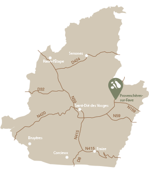

Les Jardins de Prométhée
Les Jardins de Prométhée sont des jardins maraîchers biologiques à vocation d’insertion sociale et professionnelle. Les ouvriers maraîchers travaillent à temps partiel et restent en contrat au maximum 2 ans, durant lequel ils bénéficient d’un accompagnement dans la résolution de leurs difficultés et la réalisation de leurs projets. À l’issue du contrat, bon nombre d’entre eux accèdent à une formation ou un emploi.
L’association a vu le jour en 2004. Situés à Provenchères-sur-Fave, les terrains se trouvent dans la zone industrielle des Gros Prés le long de la Fave et également à Charémont (Frapelle) depuis 2010.
Les Jardins de Prométhée c’est 19 serres, exploitées par une vingtaine de jardiniers, trois encadrants, une secrétaire et une comptable.
Lieux de dépôt
- Anould
- Ban-de-Laveline
- Corcieux
- Étival-Clairefontaine
- Raon-l’Étape
- La Claquette
- Lutzelhouse
- Provenchères-sur-Fave
- Saâles
- Saint-Dié-des-Vosges
- Senones
91 - 93 Grande Rue
88490 Provenchères-sur-Fave
Tél : 03 29 51 77 93
Mail : lesjardinsdepromethee@gmail.com
Site : lesjardinsdepromethee.fr